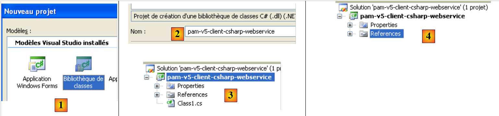

9. De applicatie [SimuPaie] – versie 5 – ASP.NET / webservice
Aanbevolen literatuur: referentie [2], Inleiding tot C# 2008, hoofdstuk 10 "Webservices"
9.1. De nieuwe architectuur van de applicatie
De gelaagde architectuur van de applicatie Pam is momenteel als volgt:
 |
We gaan deze als volgt uitbreiden:
 |
Terwijl in de vorige architectuur de lagen [web], [metier] en [dao] in dezelfde virtuele machine werden uitgevoerd.NET, zal in de nieuwe architectuur de laag [web] in een andere virtuele machine draaien dan de lagen [metier] en [dao]. Dit is met name het geval als de laag [web] zich op een machine M1 bevindt en de lagen [metier] en [dao] op een machine M2. We hebben hier te maken met een client-serverarchitectuur:
- de server bestaat uit de lagen [metier] en [dao]. Omdat het een webservice is, heeft deze webserver nr. 2 nodig om te kunnen draaien.
- De client bestaat uit de laag [web]. Om te kunnen draaien, heeft deze webserver nr. 1 nodig.
- De client en de server communiceren via het TCP/IP-netwerk met het protocol HTTP / SOAP. Hiervoor moeten twee nieuwe lagen aan de architectuur worden toegevoegd:
- de laag [S], die een webservice zal zijn. De webservice ontvangt verzoeken van externe clients en maakt gebruik van de lagen [metier] en [dao] om deze te verwerken. Er zijn talrijke manieren om een TCP/IP-service op te zetten. Het voordeel van de webservice is tweeledig:
- hij maakt gebruik van het protocol HTTP, dat door de firewalls van bedrijven en overheidsinstanties wordt doorgelaten
- het maakt gebruik van een standaard HTTP/SOAP-subprotocol, dat door talrijke ontwikkelingsplatforms wordt geïmplementeerd: .Net, Java, PHP, Flex, ... Zo kan een webservice worden ‘gebruikt’ (dit is de gangbare term) door .Net-, Java-, PHP- en Flex-clients, ...
- de [C]-laag, die de client van de externe webservice zal zijn. Deze laag heeft als taak te communiceren met de webservice [S].
- de laag [S], die een webservice zal zijn. De webservice ontvangt verzoeken van externe clients en maakt gebruik van de lagen [metier] en [dao] om deze te verwerken. Er zijn talrijke manieren om een TCP/IP-service op te zetten. Het voordeel van de webservice is tweeledig:
Deze nieuwe architectuur kan zonder al te veel moeite worden afgeleid uit de vorige:
- de lagen [metier] en [dao] blijven ongewijzigd
- de laag [web] verandert enigszins, voornamelijk om te verwijzen naar entiteiten zoals Employe en FeuilleSalaire, die entiteiten van de clientlaag [C] zijn geworden. Deze entiteiten zijn vergelijkbaar met die van de lagen [metier] of [dao], maar behoren tot verschillende naamruimten.
- De serverlaag [S] is een klasse die de interface IPamMetier van de laag [metier] implementeert. Deze implementatie beperkt zich tot het aanroepen van de overeenkomstige methoden van de laag [metier]. De methoden die door de serverlaag [S] worden geïmplementeerd, worden „blootgesteld” aan externe clients, die deze kunnen aanroepen.
- De clientlaag [C] wordt gegenereerd door Visual Studio.
De principes van de nieuwe architectuur zijn als volgt:
- de laag [web] blijft communiceren met de laag [metier] alsof deze lokaal is. Hiervoor implementeert de clientlaag [C] deinterface IPamMetier van de daadwerkelijke laag [metier] en presenteert zich aan de laag [web] als een lokale laag [metier]. Afgezien van het eerder genoemde probleem met de naamruimten, verandert de laag [web] niet. Dat is het voordeel van het werken in lagen. Als we een applicatie met één laag hadden gebouwd, zou deze zeer ingrijpend moeten worden herzien.
- De clientlaag [C] stuurt, op een voor de laag [web] transparante manier, de verzoeken van deze laag door naar de externe webservice [S]. Deze laag neemt het gehele aspect van de „netwerkcommunicatie“ voor haar rekening. Ze ontvangt een antwoord van de externe webservice, dat ze opmaakt om het aan de laag [web] te leveren in de vorm die deze verwacht.
- Aan de serverzijde ontvangt de webservice [S] opdrachten van zijn externe clients. Hij verwerkt deze om de methoden van de interface IPamMetier van de laag [metier] aan te roepen. Zodra hij het antwoord van de laag [metier] heeft ontvangen, zet hij dit in de juiste vorm om het via het netwerk door te sturen naar de client [C]. De lagen [metier] en [dao] hoeven niet te worden gewijzigd.
9.2. Het Visual Web Developer-project van de webservice
We maken een nieuw project aan met Visual Web Developer:
 |
- in [1] kiezen we voor een webproject in C#
- in [2] kiezen we "Webservice-toepassing ASP.NET"
- in [3] geven we het webproject een naam
- in [4] geven we een locatie op voor dit project
 |
- in [1] het gegenereerde project. Dit is een klassiek webproject, met de volgende details:
- er is aangegeven dat het project van het type „webservice“ is. Een webservice verstuurt geen webpagina’s HTML naar zijn klanten, maar gegevens in het formaat XML. Daarom is de pagina [Default.aspx], die gewoonlijk wordt gegenereerd, niet gegenereerd.
- In [2] is een bestand [Service1.asmx] gegenereerd met de volgende inhoud:
<%@ WebService Language="C#" CodeBehind="Service1.asmx.cs" Class="pam_v5_webservice.Service1" %>
- (vervolg)
- - de tag WebService geeft aan dat [Service.asmx] een webservice is
- - het attribuut CodeBehind geeft de locatie van de broncode van deze webservice aan
- - het attribuut Class geeft de naam aan van de klasse die de webservice in de broncode implementeert
De broncode [Service.asmx.cs] van de standaard gegenereerde webservice is als volgt:
using System.Web.Services;
namespace pam_v5_webservice
{
/// <summary>
/// Beknopte beschrijving van Service1
/// </summary>
[WebService(Namespace = "http://tempuri.org/")]
[WebServiceBinding(ConformsTo = WsiProfiles.BasicProfile1_1)]
[System.ComponentModel.ToolboxItem(false)]
// Om het aanroepen van deze webservice vanuit een script met behulp van ASP.NET AJAX mogelijk te maken, verwijdert u de commentaartekens uit de volgende regel.
// [System.Web.Script.Services.ScriptService]
public class Service1 : System.Web.Services.WebService
{
[WebMethod]
public string HelloWorld()
{
return "Hello World";
}
}
}
- regel 8: de annotatie WebService, waardoor de klasse Service1 uit regel 13 als webservice wordt aangeboden. Een webservice behoort tot een naamruimte om te voorkomen dat twee webservices wereldwijd dezelfde naam hebben. We zullen deze naamruimte later moeten wijzigen.
- regel 13: de klasse Service1 is afgeleid van de klasse WebService uit het .NET-framework.
- regel 16: de annotatie WebMethod zorgt ervoor dat de methode met deze annotatie beschikbaar wordt gesteld aan externe clients, die deze vervolgens kunnen aanroepen.
- regels 17-20: de methode HelloWorld is een demonstratiemethode. We zullen deze later verwijderen. Hiermee kunnen we de eerste tests uitvoeren en kennismaken met de tools van Visual Studio en met enkele zaken die je moet weten over webservices.
 |
- in [1] voeren we de webservice [Service.asmx] uit
 |
- VS Web Developer heeft zijn ingebouwde webserver gestart en laat deze luisteren op een willekeurige poort, in dit geval 1599. Vervolgens is de URL [2] opgevraagd bij de webserver. Dit is de URL van een testpagina van de webservice.
- in [3], een link waarmee het beschrijvingsbestand van de webservice kan worden bekeken. Dit bestand, dat vanwege zijn extensie (.wsdl) WSDL (WebService Description Language) wordt genoemd, is een XML-bestand waarin de door de webservice aangeboden methoden worden beschreven. Aan de hand van dit WSDL-bestand kunnen clients het volgende te weten komen:
- de naamruimte van de webservice
- de lijst met methoden die door de webservice worden aangeboden
- de parameters die voor elk van deze methoden worden verwacht
- het antwoord dat door elke methode wordt teruggestuurd
- in [4], de enige methode die door de web -service wordt aangeboden.
 |
- in [5], de inhoud van het bestand WSDL dat is verkregen via de link [3]. Let op het bestand URL en [6]. Kennis hiervan is noodzakelijk voor klanten van de webservice.
 |
- in [7]: de pagina die wordt verkregen door de link [4] te volgen, maakt het mogelijk om de methode [HelloWorld] van de webservice aan te roepen
- in [8], het verkregen resultaat: een antwoord XML. Let op de URL [9] van de methode.
Door de voorgaande pagina’s te bestuderen, wordt duidelijk hoe een methode van een webservice wordt aangeroepen en welk type antwoord deze retourneert. Dit maakt het mogelijk om HTTP-clients te schrijven die met de webservice kunnen communiceren. De meeste huidige IDE-programma’s maken het mogelijk om deze client HTTP automatisch te genereren, waardoor de ontwikkelaar deze niet zelf hoeft te schrijven. Dit is met name het geval bij Visual Studio Express.
Voordat we verdergaan met dit project, gaan we de standaardnaamruimte wijzigen die wordt gebruikt bij het genereren van klassen:
 |
Wanneer we de projecteigenschappen selecteren (rechtsklikken op het project / Eigenschappen), zien we in [1] de naam van het project en in [2] de standaardnaamruimte.
Zodra dit is gebeurd,
- in [Service1.asmx.cs] wijzigen we de naamruimte van de klasse:
using System.Web.Services;
namespace pam_v5
{
...
public class Service1 : System.Web.Services.WebService
{
...
}
}
- in [Service.asmx] wijzigen we ook de naamruimte die wordt gebruikt voor de klasse [Service1] (rechtsklikken / opmaak weergeven):
<%@ WebService Language="C#" CodeBehind="Service1.asmx.cs" Class="pam_v5.Service1" %>
Laten we teruggaan naar de architectuur van onze applicatie:
 |
- de laag [S] is de webservice. Deze laag beperkt zich tot het beschikbaar stellen van de methoden van de laag [metier] aan externe clients. Dit is de laag die we momenteel aan het bouwen zijn.
- De laag [C] is de client HTTP van de webservice. Dit is de laag die de IDE automatisch kunnen genereren.
- De laag [web] beschouwt de laag [C] als een lokale laag [metier], mits ervoor wordt gezorgd dat de laag [C] deinterface van de externe laag [metier] implementeert.
Hieronder zien we dat onze webservice:
- de methoden van de laag [metier] beschikbaar stelt
- met deze laag communiceren, die op haar beurt weer zal communiceren met de laag [dao].
Het project moet dus gebruikmaken van de DLL van de lagen [metier] en [dao]. Het ontwikkelt zich als volgt:
 |
- naar [1], er worden verwijzingen naar het project toegevoegd
- in [2] worden de gebruikelijke DLL-bestanden uit de map [lib] geselecteerd. Er moet op worden gelet dat ze allemaal de eigenschap "Lokale kopie" op True hebben. De geselecteerde DLL-bestanden zijn die welke de lagen [metier] en [dao] implementeren met ondersteuning voor NHibernate.
Een webapplicatie van het type "ASP.NET-webservice" kan een globale applicatieklasse "Global.asax" hebben, net als een klassieke "ASP.NET-website". We hebben het nut van een dergelijke klasse gezien:
- deze wordt bij het opstarten van de applicatie geïnstantieerd en blijft in het geheugen
- daardoor kan ze gegevens opslaan die door alle clients worden gedeeld en die alleen-lezen zijn. In onze applicatie zal ze, net als in de vorige, de vereenvoudigde lijst met medewerkers opslaan. Dit voorkomt dat deze lijst uit de database moet worden opgehaald wanneer een client erom vraagt.
 |
- in [1], klik met de rechtermuisknop op het project
- in [2], kies de optie [Ajouter un nouvel élément]
- in [3], kies [Classe d'application globale]
- in [4] is het bestand [Global.asax] aan het project toegevoegd
De inhoud van het bestand [Global.asax] is als volgt:
<%@ Application Codebehind="Global.asax.cs" Inherits="pam_v5.Global" Language="C#" %>
De inhoud van het bestand [Global.asax.cs] is als volgt:
using System;
namespace pam_v5
{
public class Global : System.Web.HttpApplication
{
protected void Application_Start(object sender, EventArgs e)
{
}
...
}
}
Wat moeten we doen in de methode Application_Start? Precies hetzelfde als in de vorige webapplicaties. Laten we teruggaan naar de architectuur van de applicatie en daar de klasse [Global] plaatsen:
 |
In het bovenstaande schema
- wordt de klasse [Global] geïnstantieerd wanneer de webservice wordt gestart. Deze blijft in het geheugen zolang de webservice actief is.
- De klasse [Global] instantiëert de lagen [metier] en [dao] in haar methode [Application_Start]
- Om de prestaties te verbeteren, slaat de klasse [Global] de vereenvoudigde lijst met medewerkers op in een intern veld. Zij zal de lijst met medewerkers uit dit veld opleveren.
- De webservice wordt bij elk verzoek van een klant geïnstantieerd. Deze verdwijnt nadat het verzoek is afgehandeld. Hij zal niet rechtstreeks de laag [metier] aanspreken, maar de klasse [Global]. Deze zal de interface van de laag [metier] implementeren.
De klasse [Global] is vergelijkbaar met de klasse die al voor de vorige toepassingen is gebouwd:
using System;
using Pam.Dao.Entites;
using Pam.Metier.Entites;
using Pam.Metier.Service;
using Spring.Context.Support;
namespace pam_v5
{
public class Global : System.Web.HttpApplication
{
// --- statische gegevens van de applicatie ---
public static Employe[] Employes;
public static IPamMetier PamMetier = null;
protected void Application_Start(object sender, EventArgs e)
{
// instantiëring van de laag [metier]
PamMetier = ContextRegistry.GetContext().GetObject("pammetier") as IPamMetier;
// de vereenvoudigde lijst met medewerkers wordt opgehaald
Employes = PamMetier.GetAllIdentitesEmployes();
}
// vereenvoudigde lijst van werknemers
static public Employe[] GetAllIdentitesEmployes()
{
return Employes;
}
// salaris van een medewerker
static public FeuilleSalaire GetSalaire(string SS, double heuresTravaillées, int joursTravailles)
{
return PamMetier.GetSalaire(SS, heuresTravaillées, joursTravailles);
}
}
}
De klasse [Global] implementeert de interface [IPamMetier], maar dit wordt niet expliciet vermeld in de declaratie:
public class Global : System.Web.HttpApplication, IPamMetier
De methoden GetAllIdentitesEmployes (regel 24) en GetSalaire (regel 30) zijn namelijk statisch, terwijl de methoden van de interface IPamMetier dat niet zijn. Daarom kan de klasse Global de interface IPamMetier niet implementeren. Bovendien is het niet mogelijk om de methoden GetAllIdentitesEmployes en GetSalaire als niet-statisch te declareren. Deze worden namelijk benaderd via de naam van de klasse en niet via een instantie daarvan.
- regel 15: de methode Application_Start is vergelijkbaar met die van de klassen [Global] die in eerdere versies zijn behandeld. Deze methode instantiëert de laag [metier] (regel 18) en initialiseert vervolgens (regel 20) de array met werknemers uit regel 12.
- regel 24: de methode GetAllIdentitesEmployes geeft alleen de array met medewerkers uit regel 12 weer. Dit is het voordeel van het opslaan ervan bij het opstarten van de applicatie.
- regel 30: de methode GetSalaire roept de gelijknamige methode van de laag [metier] aan.
Om de laag [metier] (regel 18) te instantiëren, maakt de klasse [Global] gebruik van het Spring-framework. Dit framework wordt geconfigureerd door het bestand [Web.config], dat identiek is aan dat van het vorige project: het configureert Spring en NHibernate om de lagen [metier] en [dao] van de webservice te instantiëren.
Laten we terugkeren naar de architectuur van onze client/server-applicatie:
 |
Aan de serverzijde hoeven we nu alleen nog maar de webservice [S] zelf te schrijven. Als we terugkeren naar de architectuur van de applicatie:
 |
zien we dat aan de serverzijde alle lagen die voorafgaan aan de laag [metier] de interface daarvan, IPamMetier, implementeren. Dit is niet verplicht, maar het is een logische aanpak. Deze redenering kan ook aan de clientzijde worden toegepast, op de client [C] van de webservice [S]. Zo implementeren alle lagen die de laag [web] van de laag [metier] scheiden, de interface IPamMetier. We kunnen dus stellen dat we zijn teruggekeerd naar een drielaagse applicatie:
- de presentatielaag [web] [1]
- de laag [metier] [2]
- de gegevenslaag [3]
De implementatie van de webservice [Service1.asmx.cs] zou als volgt kunnen zijn:
using System.Web.Services;
using Pam.Dao.Entites;
using Pam.Metier.Entites;
using Pam.Metier.Service;
namespace pam_v5
{
[WebService(Namespace = "http://st.istia.univ-angers.fr/")]
[WebServiceBinding(ConformsTo = WsiProfiles.BasicProfile1_1)]
[System.ComponentModel.ToolboxItem(false)]
public class Service1 : System.Web.Services.WebService, IPamMetier
{
// lijst met alle identiteitsgegevens van de werknemers
[WebMethod]
public Employe[] GetAllIdentitesEmployes()
{
return Global.GetAllIdentitesEmployes();
}
// ------- de salarisberekening
[WebMethod]
public FeuilleSalaire GetSalaire(string ss, double heuresTravaillees, int joursTravailles)
{
return Global.GetSalaire(ss, heuresTravaillees, joursTravailles);
}
}
}
- regel 8: de klasse is geannoteerd met het attribuut [WebService] en we geven de naamruimte van de webservice een naam
- regel 11: de klasse [Service1] erft van de klasse [WebService] en implementeert de interface [IPamMetier]
- regels 15 en 22: elke methode van de klasse is geannoteerd met het attribuut [WebMethod] om beschikbaar te zijn voor externe clients. Standaard zijn alle openbare methoden van een webservice beschikbaar. De attributen in de regels 15 en 22 zijn hier dus optioneel. Om de interface [IPamMetier] te implementeren, hoeft elke methode alleen maar de gelijknamige methode van de klasse [Global] aan te roepen.
We zijn klaar om de webservice uit te voeren:
 |
- in [1] wordt het project opnieuw gegenereerd
- in [2] selecteren we de webservice [Service1.asmx] en geven we deze weer in de browser [3]
- in [4], de weergegeven webpagina. Hierop staan de methoden van de webservice.
 |
- in [4] volgen we de link [GetAllIdentitesEmployes] en komen we in [5] op de testpagina van deze methode terecht.
- in [6], de URL van de methode
- in [7], de knop [Appeler] waarmee de methode kan worden getest. Deze methode vereist geen parameters.
- in [8], het XML-resultaat dat door de webservice wordt teruggestuurd. Hierin zijn alleen de eigenschappen SS, Nom, Prenom van de objecten Employe relevant, omdat de methode [GetAllIdentitesEmployes] alleen om deze eigenschappen vraagt. Deze methode retourneert echter een array van objecten Employe. In [8] zien we dat de numerieke eigenschappen Id en Version in de teruggestuurde XML-stream voorkomen, maar niet de eigenschappen met de waarde null: Adresse, Ville, CodePostal, Indemnites.
We hebben een actieve webservice. We gaan er nu een C#-client voor schrijven. Hiervoor hebben we de URI nodig uit het bestand WSDL van de webservice. We vinden deze op de pagina die aanvankelijk wordt weergegeven bij het uitvoeren van [Service.asmx]:
 |
- in [1], het URI van de webservice
- in [2], de link die naar het bijbehorende bestand leidt WSDL
- naar [3], de waarde van deze link
9.3. Het C#-project van een client NUnit van de webservice
We maken een C#-project (met Visual C# en niet met Visual Web Developer) voor de webdienstclient. Dit wordt een testclient NUnit. Het project krijgt dus het type „klassenbibliotheek”.
 |
- In [1] maken we een C#-project van het type "klassenbibliotheek"
- in [2] geven we het project een naam
- in [3]: het project. We verwijderen [Class1.cs].
- in [4], het nieuwe project.
 |
- in de projecteigenschappen, op het tabblad [Application] [5], stellen we de naamruimte van het project in. Elke klasse die door de IDE wordt gegenereerd, zal in deze naamruimte worden geplaatst.
We slaan ons nieuwe project op een geschikte locatie op:
Zodra dit is gebeurd, genereren we de client voor de externe webservice. Om te begrijpen wat we gaan doen, moeten we terugkeren naar de client/server-architectuur die we aan het opbouwen zijn:
 |
De IDE genereert de clientlaag [C] op basis van de URI uit het bestand WSDL van de webservice [S]. Ter herinnering: de URI van dit bestand is eerder genoteerd. We gaan als volgt te werk met de :
 |
- naar [1], klik met de rechtermuisknop op de tak References en voeg een serviceverwijzing toe
- in [2], geef de URL aan van het bestand WSDL van de eerder genoteerde webservice. Deze moet eerst worden gestart als dat nog niet is gebeurd.
- in [3], vraag om de webservice te detecteren via het bijbehorende bestand WSDL
- in [4], de ontdekte webservice
- in [5], de methoden die door de webservice worden aangeboden.
- in [6], de naamruimte waarin de klassen en interfaces van de te genereren client moeten worden geplaatst.
- we bevestigen de wizard
 |
- in [1], de gegenereerde client- . We dubbelklikken erop om toegang te krijgen tot de inhoud.
- In [2] worden in de objectverkenner de klassen en interfaces van de naamruimte Client.WsPam weergegeven. Dit is de naamruimte van de gegenereerde client.
- In [3] staat de klasse die de webdienstclient implementeert.
- In [4] staan de methoden die door de client [Service1SoapClient] worden geïmplementeerd. Hierin bevinden zich de twee methoden van de externe webservice [5] en [6].
- In [2] staan de afbeeldingen van de entiteiten van de lagen:
- [metier]: FeuilleSalaire, ElementsSalaire
- [dao]: Employe, Cotisations, Indemnites
Verder moet u er rekening mee houden dat deze afbeeldingen van externe entiteiten zich aan de clientzijde bevinden en in de naamruimte PamV5Client.WsPam.
Laten we eens kijken naar de methoden en eigenschappen die door een van deze afbeeldingen worden blootgesteld:
 |
- in [1] selecteren we de lokale klasse [Employe]
- in [2] vinden we de eigenschappen van de externe entiteit [Employe] terug, evenals privévelden die worden gebruikt voor de eigen behoeften van de lokale entiteit.
Laten we teruggaan naar onze C#-toepassing. We voegen er een testklasse NUnit aan toe:
 |
- in [1] is de klasse [NUnit] toegevoegd. De klasse [NUnit] heeft het framework NUnit nodig en dus een verwijzing naar de klasse DLL daaruit. We gaan er hier vanuit dat het framework NUnit op de computer is geïnstalleerd (http://nunit.org/).
- In [2] voegen we een verwijzing toe aan het project
- in het tabblad [3]. In NET, dat de op de computer opgeslagen DLL-bestanden verzamelt, selecteren we [4], de DLL en [nunit.framework] met minimale versie 2.4.6.
Daarnaast gaan we Spring gebruiken om de lokale client [C] van de webservice [S] te instantiëren:
 |
De verwijzing naar de DLL van Spring kan worden toegevoegd, net zoals bij het framework NUnit, mits de DLL-bestanden eerder op de computer zijn opgeslagen (http://www.springframework.net/download.html).
Wij gaan anders te werk. We gebruiken de map [lib] uit eerdere projecten, die de voor Spring benodigde DLL bevatte, en voegen de Spring-referentie toe aan het project:
 |
Laten we nog eens terugkomen op de architectuur van de client die momenteel in ontwikkeling is:
 |
Hierboven zien we dat de testclient [1] gekoppeld is aan een uitgebreide laag [metier] [2]. Deze laag bevat dezelfde methoden als de externe laag [metier]. We kunnen dus de testklasse gebruiken die we al zijn tegengekomen bij het testen van de laag [metier] in het C#-project [pam-metier-dao-nhibernate]:
using NUnit.Framework;
using Pam.Dao.Entites;
using Pam.Metier.Entites;
using Pam.Metier.Service;
using Spring.Context.Support;
namespace Pam.Metier.Tests {
[TestFixture()]
public class NunitTestPamMetier : AssertionHelper {
// de te testen laag [metier]
private IPamMetier pamMetier;
// constructor
public NunitTestPamMetier() {
// instantiëring van laag [dao]
pamMetier = ContextRegistry.GetContext().GetObject("pammetier") as IPamMetier;
}
[Test]
public void GetAllIdentitesEmployes() {
// controle aantal werknemers
Expect(2, EqualTo(pamMetier.GetAllIdentitesEmployes().Length));
}
[Test]
public void GetSalaire1() {
// berekening van een loonstrook
FeuilleSalaire feuilleSalaire = pamMetier.GetSalaire("254104940426058", 150, 20);
// controles
Expect(368.77, EqualTo(feuilleSalaire.ElementsSalaire.SalaireNet).Within(1E-06));
// loonstrook van een niet-bestaande werknemer
bool erreur = false;
try {
feuilleSalaire = pamMetier.GetSalaire("xx", 150, 20);
} catch (PamException) {
erreur = true;
}
Expect(erreur, True);
}
}
}
Er moeten enkele wijzigingen worden aangebracht:
- op regel 18 wordt de laag [metier] geïnstantieerd met het Spring-framework. De klasse is in beide gevallen niet dezelfde. Hier is de lokale laag [metier] een instantie van de klasse [PamV5Client.WsPam.Service1SoapClient], de klasse die door IDE wordt gegenereerd. Daarom is Spring als volgt geconfigureerd in het bestand [app.config] van het C#-project:
<?xml version="1.0" encoding="utf-8" ?>
<configuration>
<configSections>
<sectionGroup name="spring">
<section name="context" type="Spring.Context.Support.ContextHandler, Spring.Core" />
<section name="objects" type="Spring.Context.Support.DefaultSectionHandler, Spring.Core" />
</sectionGroup>
</configSections>
<spring>
<context>
<resource uri="config://spring/objects" />
</context>
<objects xmlns="http://www.springframework.net">
<object id="pammetier" type="PamV5Client.WsPam.Service1SoapClient, pam-v5-client-csharp-webservice"/>
</objects>
</spring>
<system.serviceModel>
...
- op regel 16 hierboven is het object [pammetier] een instantie van de klasse [PamV5Client.WsPam.Service1SoapClient] die zich in de assembly [pam-v5-client-csharp-webservice] bevindt. Om de eerste informatie te verkrijgen, volstaat het om terug te gaan naar de definitie van de klasse [Service1SoapClient] in de objectverkenner (paragraaf 9.3):
 |
- in [2], de implementatieklasse van de lokale laag [metier], en in [1] de naamruimte
- in [3], in de projecteigenschappen, de naam van de assembly, de tweede vereiste informatie voor de configuratie van het Spring-object [pammetier].
Laten we teruggaan naar de code voor het instantiëren van de lokale laag [metier] in [NUnit.cs]:
// de te testen laag [metier]
private IPamMetier pamMetier;
// constructor
public NunitTestPamMetier() {
// instantie van laag [dao]
pamMetier = ContextRegistry.GetContext().GetObject("pammetier") as IPamMetier;
}
Regel 7: de externe laag [metier] was van het type IPamMetier. Hier is de laag [metier] van het type [Service1SoapClient]:
public class Service1SoapClient : System.ServiceModel.ClientBase<Service1Soap>
We zien dat de klasse Service1SoapClient de interface IPamMetier niet implementeert, ook al biedt ze methoden met dezelfde naam aan. We moeten de instantiëring van de lokale laag [metier] dus als volgt schrijven:
// de te testen laag [metier]
private Service1SoapClient pamMetier;
// constructor
public NunitTestPamMetier() {
// instantie van de laag [metier]
pamMetier = ContextRegistry.GetContext().GetObject("pammetier") as Service1SoapClient;
}
Een andere wijziging die moet worden aangebracht:
[Test]
public void GetSalaire1() {
...
try {
feuilleSalaire = pamMetier.GetSalaire("xx", 150, 20);
} catch (PamException) {
erreur = true;
}
Expect(erreur, True);
}
De bovenstaande code gebruikt in regel 6 het type PamException, dat aan de clientzijde niet bestaat. We vervangen dit door de bovenliggende klasse, het type Exception.
[Test]
public void GetSalaire1() {
...
try {
feuilleSalaire = pamMetier.GetSalaire("xx", 150, 20);
} catch (Exception) {
erreur = true;
}
Expect(erreur, True);
}
Ten slotte zijn de geïmporteerde naamruimten niet meer dezelfde:
using System;
using PamV5Client.WsPam;
using NUnit.Framework;
using Spring.Context.Support;
Nu dit is gebeurd, kan het project van het type "Klassebibliotheek" worden gegenereerd. Het volgende bestand DLL wordt aangemaakt:
 |
- in [1], de map [bin/Release] van het C#-project
- in [2], de DLL van het project.
De test NUnit wordt vervolgens uitgevoerd door het framework NUnit (de basis MySQL dbpam_nhibernate moet actief zijn voor de test):
- in [3] en [4] wordt de DLL [2] geladen in de testtoepassing NUnit
 |
- in [5] wordt de testklasse geselecteerd en uitgevoerd [6]
- in [7], de resultaten van een geslaagde test
We hebben nu een werkende webservice.